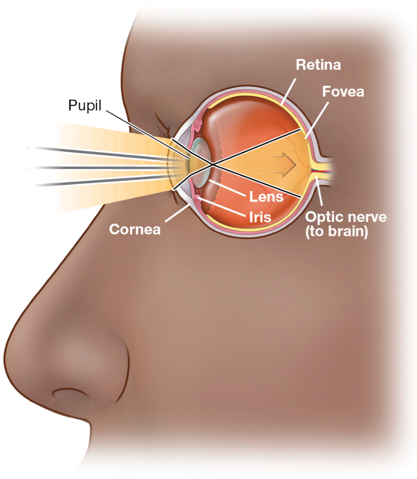

Deep learning for accurate, affordable and accessible eye-tracking
Shreshth Saxena (saxens17@mcmaster.ca) Supervised by Dr. Lauren Fink and Dr. Elke Lange
Eye Movements
Eye Movements
Eye Movements
Visual Attention
Reading, scene viewing, art/film perception, visual search etc.
Human Computer Interaction
Interface design, driving, aviation, marketing/advertising etc.
Memory & Ageing
The obligatory effects of memory on eye movements, Ryan et al. (2007)
Auditory Attention
Fink et al. (2018), Lange et al. (2017), Maroti et al. (2017)
Eye Tracking
Eye Tracking (Hardware focussed)
Desktop mounted
Head mounted


Eye Tracking(Software focussed)


| Web browser based | Deep learning based |
|---|---|
| Proprietary: Xlabs, LabVanced, Gorilla Open-sourced: WebGazer, TurkerGaze | MPIIGaze, RT-GENE, FAZE, ETHXGaze |
| Specialized tasks: web browsing behavior (WebGazer, Xlabs), Image saliency prediction (TurkerGaze) | Developed for generalized gaze prediction |
| Low-order feature detection (susceptible to noise) | Higher order feature learning (robust to noise) |
| Hardware specifications are a performance bottleneck | Modular and actively being developed for better performance |
| Webgazer reported an error of 4.17˚ in online studies | FAZE reported an error of 3.18˚ on GazeCapture dataset |
| Online webcam-based eye tracking in cognitive science: A first look, Semmelmann and Weigelt (2018) | Appearance-based Gaze Estimation With Deep Learning: A Review and Benchmark, Cheng et al. (2021) |


Our study
Our study
| MPIIGazeZhang et al. (2015) | ETHXGazeZhang et al. (2020) | FAZE Park et al. (2019) | |
|---|---|---|---|
| CNN architecture | LeNet | Resnet-50 | DenseNet based Encoder-Decoder |
| Training dataset | MPIIGaze | ETHXGaze | GazeCapture |
| Accuracy (MPIIGaze dataset) | 6.3⁰ | 4.8⁰ | 3.06⁰ |
| Inference speed | ~12fps | ~4fps | ~1fps |
Our study
N=65 (age btw 20-35; no glasses)Pre-registration: https://osf.io/qh8kx
Online experiment
Calibration
Online experiment
Calibration
Shreshth Saxena, Elke Lange, and Lauren Fink. 2022. Towards efficient calibration for webcam eye-tracking in online experiments. In 2022 Symposium on Eye Tracking Research and Applications (ETRA '22). Association for Computing Machinery, New York, NY, USA, Article 27, 1–7. https://doi.org/10.1145/3517031.3529645
Fixation

| MPIIGaze | ETHXGaze | FAZE | |
|---|---|---|---|
| Accuracy | 3.70° (IQR: 2.74°-4.59°) | 3.40° (IQR: 2.67°-4.13°) | 2.44° (IQR: 1.86°-2.90°) |
| Root Mean Squared (Precision) | 2.33° (IQR: 1.88-2.75) | 1.80° (IQR: 1.28°-2.29°) | 0.47° (IQR: 0.29-0.64) |
| Standard Deviation (Precision) | 2.96° (IQR: 2.32°-3.57°) | 2.39° (IQR: 1.70-2.98) | 1.63° (IQR: 1.06° 2.07°) |
Zone classification
Zone classification
Free viewing
Free viewing


| MPIIGaze | ETHXGaze | FAZE | |
|---|---|---|---|
| Fixation count | 14 IQR: 12-18 | 13 IQR: 10-15 | 12 IQR: 11-13 |
| Gaze entropy | 0.40 IQR:0.38-0.44 | 0.38 IQR: 0.35-0.41 | 0.35 IQR: 0.33-0.37 |

Smooth pursuit
Blink detection
| EAR | RT_BENE | |
|---|---|---|
| blinks/trial | 6.9 (IQR: 6.3-7.2) | 5.3 (IQR: 4.9-6) |
| blink latency | 381 ms(IQR: 293-427 ms) | 419 ms(IQR: 318-502 ms) |
| blink duration | 403 ms(IQR: 383-424 ms) | 212 ms(IQR : 157-243 ms) |
Comparing with lab-based eye tracking

Comparing with lab-based eye tracking
| Task | Measure | Webcam results (model) | Pupil Labs | EyeLink |
|---|---|---|---|---|
| Fixation | Accuracy | 2.44° (FAZE) | 0.82° | 0.57° |
| Precision (RMS) | 0.47° (FAZE) | 0.119° | 0.023° | |
| Precision (STD) | 1.63° (FAZE) | 0.311° | 0.193° | |
| Smooth Pursuit | Onset latency | 0.267s (MPIIGaze) | 0.245s | 0.241s |
| Blink Detection | Number of blinks | 6.9 (EAR) | 5.3 | *7.1 |
| Blink duration | 0.212s (RT_BENE) | *0.214s | 0.190s |
Conclusion
|
Conclusion
- Deep learning improves eye tracking accuracy for online setups
- It increases affordability, scalability and validity of studies
- It requires less calibration, longer trials feasible
- We create and release processing pipelines for 30Hz eye-tracking data
- Limitations: Resolution, real-time application
Thank you for your attention
Acknowledgement: Max Planck institute for Empirical Aesthetics, Frankfurt, Germany